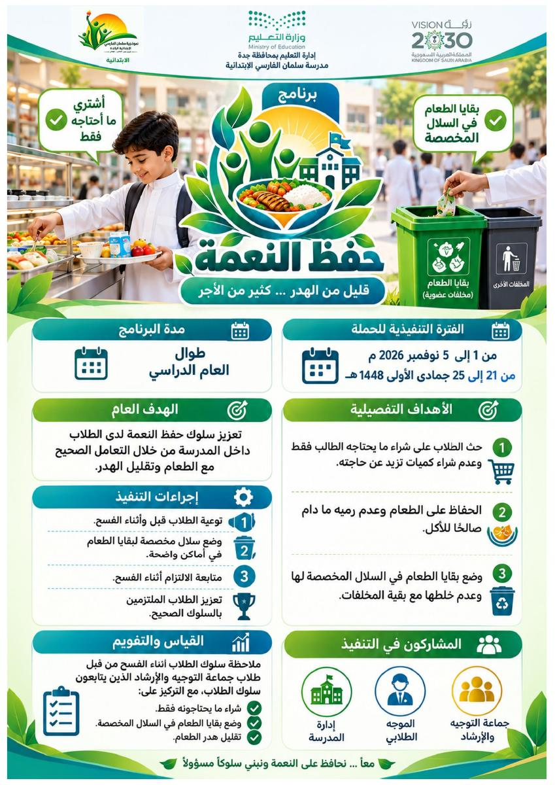
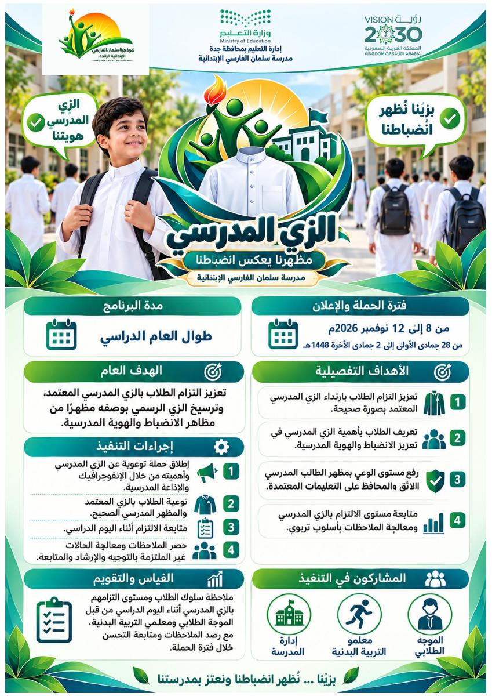
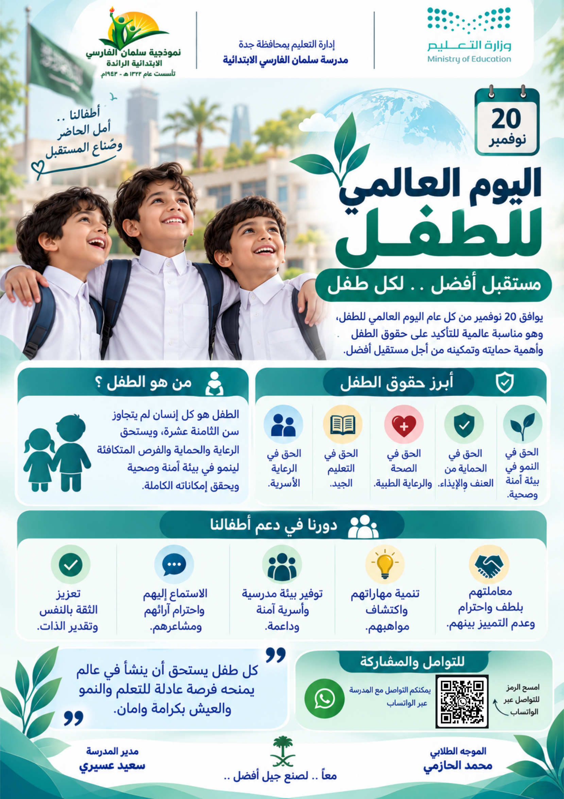
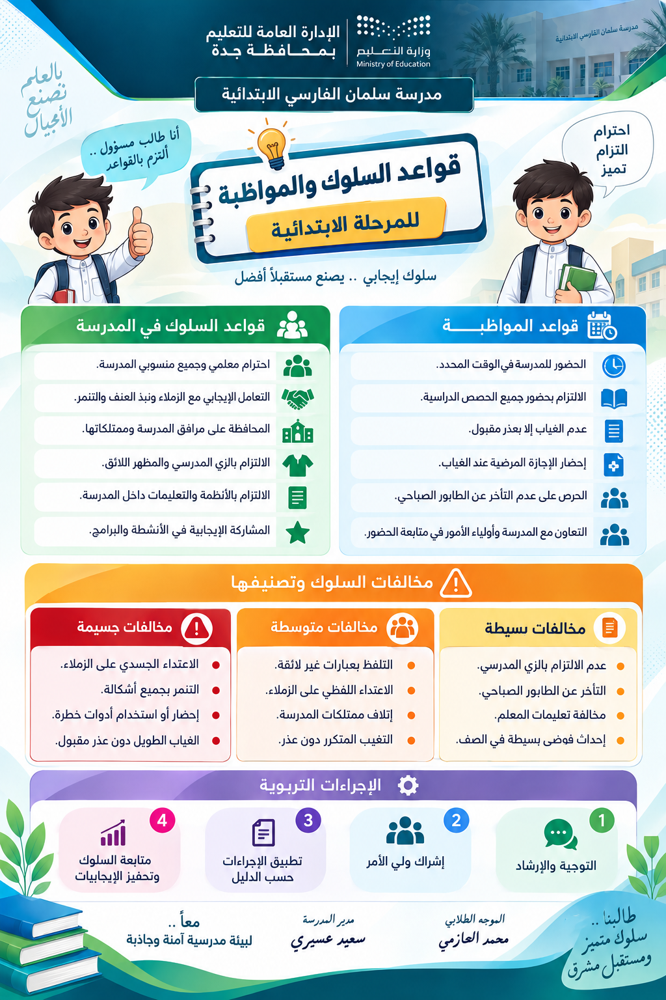
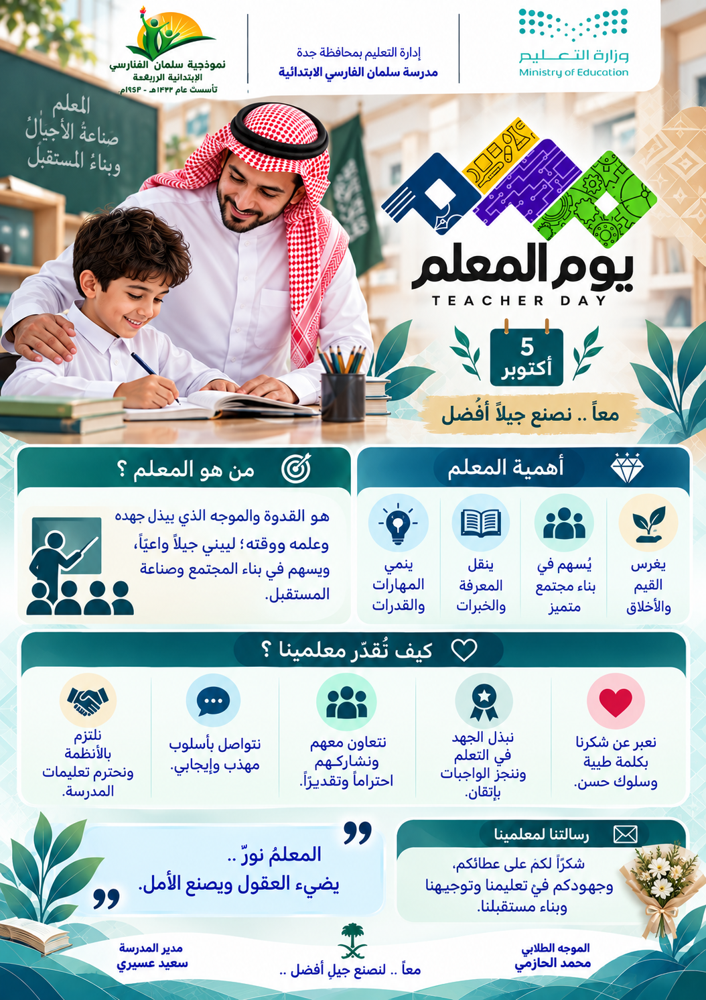
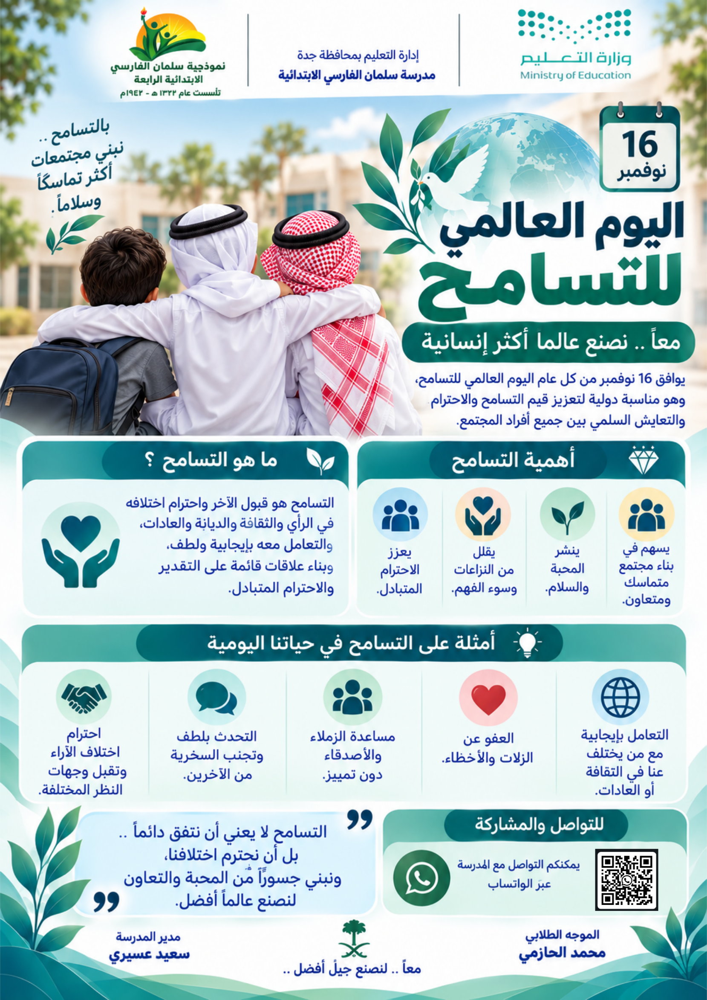
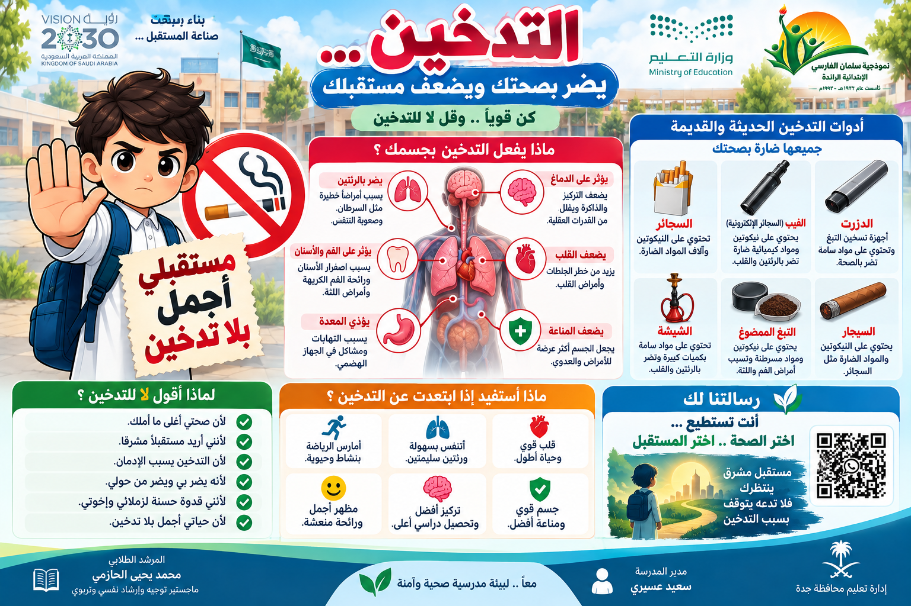
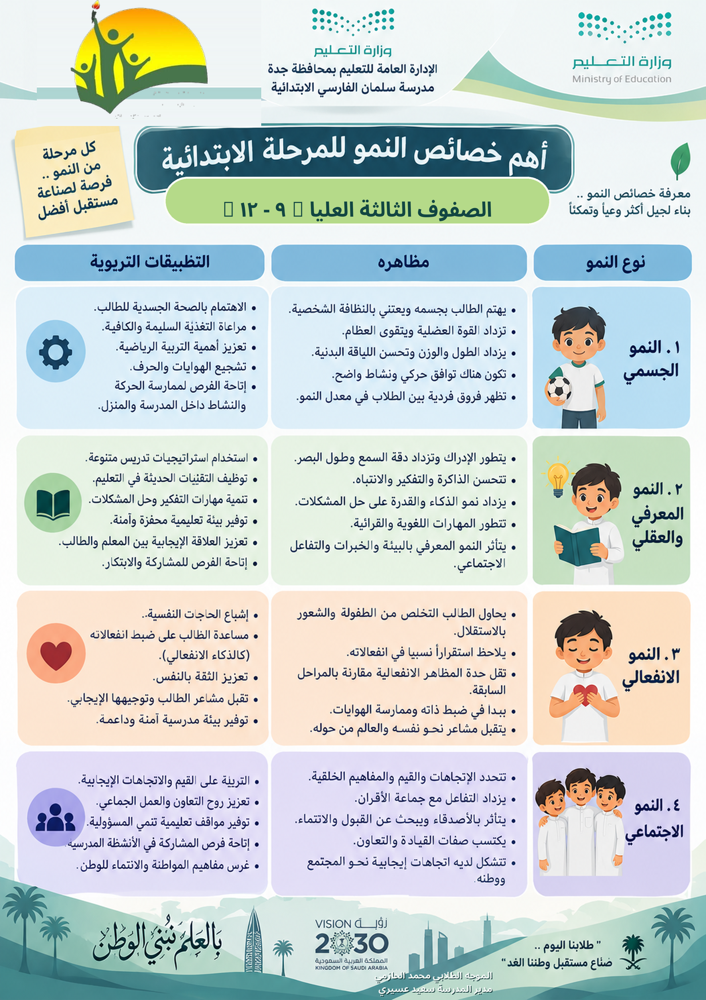

الهوية الوطنية
تفعيل المادة الرابعة والثلاثين
تعزيز قيم الانتماء والولاء للوطن في المناهج والأنشطة والحصص الدراسية.
أحدث الرسائل والمواد التوعوية المدرسية، مرتبة حسب تاريخ إضافتها إلى المجلة.
تعزيز قيم الانتماء والولاء للوطن في المناهج والأنشطة والحصص الدراسية.

رسائل توعوية عن حفظ الحقوق، وطلب المساندة، ومسؤولية حماية أبنائنا.

التوعية بأثر الرفقة في السلوك والاختيارات، ودور الأسرة في دعم الأبناء.







رسالة عن حقوق الطفل في الرعاية والتعليم والصحة والحماية، ودورنا في دعمه ونمائه.

تعرف على قواعد السلوك والمواظبة والإجراءات التربوية في المرحلة الابتدائية.

احتفاء برسالة المعلم وجهوده في التعليم وبناء الأجيال وصناعة المستقبل.

دعوة إلى احترام الاختلاف، ونشر المحبة والسلام، والتعامل الإيجابي مع الآخرين.

رسالة توعوية للوقاية من التدخين ومنتجاته وآثاره الصحية.

تعرف على جوانب النمو الجسمي والمعرفي والانفعالي والاجتماعي لدى طلاب المرحلة الابتدائية.